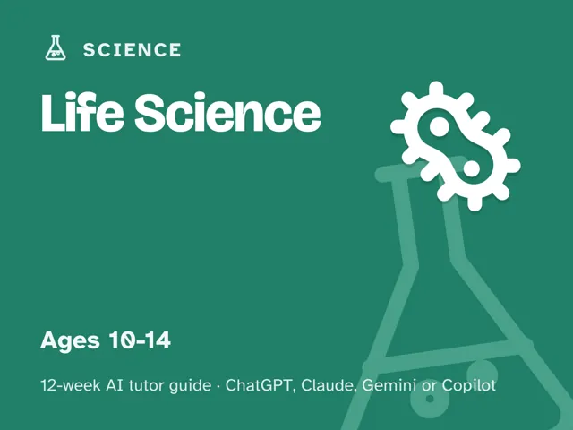
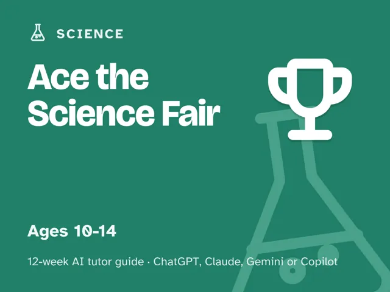

Ace the Science Fair
$29Instant download: a PDF to read, a browser copy, and the AI-tutor file you hand straight to any AI assistant.Buy it on Etsy →
Take the free placement check first: 15 minutes, and it names the week to start at.
Skip the baking-soda-volcano-from-a-website approach. This is a done-for-you, 12-week plan for guiding a 10–14-year-old through a real science-fair project: a genuine testable question, a hypothesis grounded in research, a fair test with honest controls, real data, and a presentation they can defend in their own words. An AI tutor does the questioning while you do the leading and the supervising. No science background needed.
What you get
- 12 deep weekly sessions, each built to run in about 60 minutes and fully scripted: a plain-language concept explanation, a concrete worked example, a minute-by-minute session plan with the AI-tutor prompts built in, a "show me" checkpoint so you always know it landed, common mistakes to watch for, and practice.
- A "Never used an AI chat assistant? Start here" onboarding that takes about five minutes and walks a complete beginner from zero to ready. No prior AI experience needed, and a free AI assistant is enough. Includes four rescue prompts for when a session goes sideways (learner frustrated, learner bored, the AI starting to do the work, or a check that the learner really understands).
- A parent/teacher orientation: how to sit beside a learner using AI, why the adult stays the leader and the AI is the tutor, and exactly what your weekly session looks like, plus the safety rules that apply to every session.
- An AI-tutor playbook built into the sessions: a launch prompt that fully briefs the tutor each week, a "don't give the answer" guardrail, and the four rescue prompts referenced above, ready to use at any point.
The 12 weeks
- Meet the Science Fair: what a real project involves, not a craft demo
- Turning a Curiosity Into a Question: testable vs. not testable
- Digging In: Background Research
- Make a Real Guess: The Hypothesis
- Designing a Fair Test: independent, dependent, and controlled variables
- The Plan: Procedure, Materials & Safety
- Run It & Record It: safe trials, honest data
- Making Sense of the Numbers: graphs, averages, patterns
- Telling the Story: The Display Board
- Project Week I: Plan Your Real Project (the learner's full, adult-approved plan)
- Project Week II: Run Your Real Project
- Science Fair Day: present, field judges' questions, choose what's next
Who it's for
Parents, teachers, and homeschoolers guiding a learner aged roughly 10–14. No science background needed. You lead one fully scripted ~60-minute session each week, with every step timed and written out for you in advance. The tutor does the questioning; you do the leading and the safety.
Why this instead of a free chatbot
A raw chatbot will happily write the hypothesis, run the numbers, and draft the conclusion for your learner, which turns a science fair into the chatbot's project instead of theirs. This pack ships the structure a chatbot lacks: a real 12-week arc that builds genuine inquiry one skill at a time (testable question, hypothesis, fair test, honest data, real analysis), guardrails that make the tutor ask before it tells, and checkpoints that prove the learner can defend their own project, because a judge is going to ask, and a chatbot won't be standing next to them in the gym. Curriculum + guardrails + a way to see progress. That's the difference.
Safety note
Every hands-on step is designed to be run with an adult supervising from start to finish. The tutor is instructed to say "check with your adult first" before suggesting anything involving heat, chemicals, electricity, or sharp tools, and Week 6 has the learner flag every adult-only step in their plan before testing begins. Full safety details are in the pack's disclaimer and in the safety note built into the weekly plan itself.
FAQ
- Do I need a science background? No. The AI tutor explains and questions; you lead and supervise. Every session comes with the exact prompt to start it.
- Which AI does it use? What if I've never used one? Any modern AI assistant works (ChatGPT, Claude, Copilot, Gemini), and the free version of any of them is enough; no paid plan needed. If you've never used an AI chat assistant before, the guide's first section walks you through setup in about five minutes, no prior experience required.
- Is my child's data collected? No. This is a digital guide sold to you, the adult. There's no login and no child account; you start and supervise every AI session under your own account.
- Who's responsible if something goes wrong during a test? You are. An adult must supervise every test in this guide and personally handle or closely oversee anything involving heat, chemicals, electricity, or sharp tools. This is educational content, not professional or scientific advice, and you assume the risk of any hands-on activity you choose to do.
- Will this work for a real school science fair, not just a fun project? Yes. The arc follows the same question-hypothesis-fair test-data-conclusion structure most school science fairs require, plus a display board and judge-question practice in the final weeks.
- We're not in the US. Will it fit? Yes. The guide is written in US English, and every prompt tells the AI to use your country or region (as you give it, as it works out from how you write, or by asking you) for spelling, units, money, school terms, and examples.
- What ages? Roughly 10–14. Age-banded variants are on the roadmap.
- Refunds? Standard marketplace refund policy applies.
$29Instant download: a PDF to read, a browser copy, and the AI-tutor file you hand straight to any AI assistant.Buy it on Etsy →